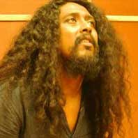
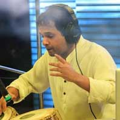

Testi monial
-

"I proudly promote AWS. My experience of working with them is an honest and sincere effort with great professionalism. I blindly trust the sound of my films to AWS."
Arindam Sil [ Famous & Highly successful Director-Actor-Producer ]
-
"It was a pleasure working at Anindit's studio - Aural Workstation. The team is creative, spirited and on top of the game . The studio is well equipped and has a positive vibe.
I wish them roaring success!"
Pandit Bickram Ghosh [ Tabla maestro & pioneer of new-age fusion music ]
-
"I know this guy Anindit for quite some time now.Yes, few years back while dubbing for some film met this energetic & efficient guy & I was really impressed to see him working.Very focused,no nonsense & more importantly his precision made me trust him with his work.Cut to 2015.One of the most important films in my career Har har byomkesh is in post production stage & I meet Anindit again.This time back from Mumbai & "the" Yash Raj Studios..Ready with his own studio.Well you all now know how was the end product.Anindit & his team has designed the soundscape for Har Har Byomkesh with much care & brilliant they were in execution.He has not only matured with age & experience but has grown as a human being too..& his studio Aural Workstation, with all modern equipments is ready to provide the much required cutting edge technology to Bangla cinema.All the best brother.More power to you.Hope to reunite with you guys really soon."
Abir Chatterjee [ Leading Actor of Bengali Film Industry ]
-

"I have always been fussy about recording in studios on account of the discomfort created by a stiff dead atmosphere and an extreme time bound attitude that often affects the quality of my music. Being a vocalist I mastered a few arts of compromising and abiding by the demand of a circumstance. But when it comes to instrumental originals, I am super freaked out by my inability and have my own fears about quality.
Aural Workstation completely broke this mythical fear of mine by making me completely comfortable as if I was sitting in my own lounge playing with my friends. Recording my debut instrumental album "The lion and the hamster" was one of the most pleasurable experiences with Anindit Adeep and the entire gang. Impeccable recording aesthetics, calmness of mind and a loving fun atmosphere, Aural Workstation is one of my favourite work stations. Lots of love to you guys. keep being who you are. Big fat hugs."
Arko Mukhaerjee [ Internationally Acclaimed Urban Folk Singer-Musician ]
-

"Aural workstation is my joint right now. A professional and positive work environment and great sounding rooms. My boys Adeep and Anindit are two of my favorite young engineers. If you want a great sound in Kolkata Aural Workstation is where you want to go."
Mayookh Bhaumik [ National Award winning Music Director ]